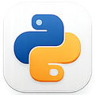

AI только для писем
ChatGPT помогает с текстом, но цифры, Excel и отчёты всё ещё обрабатываются вручную.
Практический курс для финансистов
Научитесь использовать AI для работы. Курс на практических примерах из реальной работы.
Без опыта в программировании · Применяйте с первого урока
Инструменты, с которыми вы будете работать

PythonObsidianExcelПроблема
ChatGPT помогает с текстом, но цифры, Excel и отчёты всё ещё обрабатываются вручную.
Инвойсы, договоры, акты и bank statements забирают часы на поиск, копирование и проверку данных.
Задачи становятся сложнее, а программиста или отдельной automation-команды рядом нет.
Финансисты, которые освоили AI, работают быстрее, точнее и берут на себя больше задач.
Для кого
Для тех, кто работает с документами, цифрами, Excel, отчётностью и повторяющимися задачами.
Опыт в программировании не нужен. Нужна готовность работать по-новому.
Программа
7 модулей — от AI-мышления до собственной системы автоматизации финансовой работы.
Как перестать использовать AI как чат-бот и начать использовать его как рабочий инструмент.
Извлечение и анализ данных из договоров, актов, инвойсов, отчётов и банковских выписок.
Формулы, очистка данных, сверки, контрольные процедуры и поиск ошибок с помощью AI.
VS Code, Codex и простые Python-утилиты для повторяющихся финансовых задач.
P&L, Balance Sheet, Cash Flow, коэффициенты, аналитика и интерпретация результатов.
Промпты, шаблоны, Obsidian, кастомные workflows и инструменты под вашу работу.
Как встроить AI в процессы: от документов и сверок до отчётности и контроля.
Результат
Повторяющиеся задачи переходят в автоматизацию.
Документы, таблицы, проверки и отчёты занимают меньше времени.
Меньше ошибок, больше прозрачности и уверенности в данных.
Авторы
Автор курса
Ex-KPMG finance & accounting specialist с международным опытом в corporate finance, Canadian e-commerce и консалтинге в Dubai, UAE.
Курс построен вокруг практики: как финансисту использовать AI не как чат-бот, а как рабочую систему.
Тьютор / координатор курса
Руководитель направления бюджетирования и планирования в управляюще-консалтинговой компании в сфере utilities & infrastructure.
Помогает превращать материалы курса в применимые рабочие навыки: от промптов до устойчивых процессов.
Отзывы
Я проходила Beta-курс в декрете и хотела вернуться в профессию с более сильными навыками. Курс помог систематизировать работу с AI-инструментами и я получила новую позицию в японской аниме-компании.
После данного Beta-курса я автоматизировал подготовку данных и рабочих файлов для налоговой декларации. Время на рутинные операции сократилось значительно, лайк.
Тарифы
Один раз — навыки на годы вперёд.
Start
Для самостоятельного прохождения в своём темпе.
Pro
Для тех, кто хочет внедрить AI в работу, а не просто изучить.
Expert / Team
Для внедрения AI в свою работу или команду — с личным сопровождением.
Для команд от 3 человек — напишите нам, подберём условия.
Скоро запуск
Предзаказ фиксирует цену и даёт приоритетный доступ к материалам с первого дня.
FAQ
Нет. Курс построен для финансистов. Python, VS Code и автоматизация объясняются на практических финансовых задачах.
Да. В курсе есть документы, сверки, Excel, отчётность и повторяющиеся accounting-задачи.
Да. Excel — один из центральных инструментов курса.
Да. Каждый модуль построен вокруг задач, которые можно использовать в работе уже в процессе обучения.
Доступ к материалам — без ограничения по времени. Обновления курса включены в стоимость.
AI не заменит финансиста.
Но финансист с AI заменит того, кто без него.
Без опыта в программировании · Реальные задачи · Применимо сразу